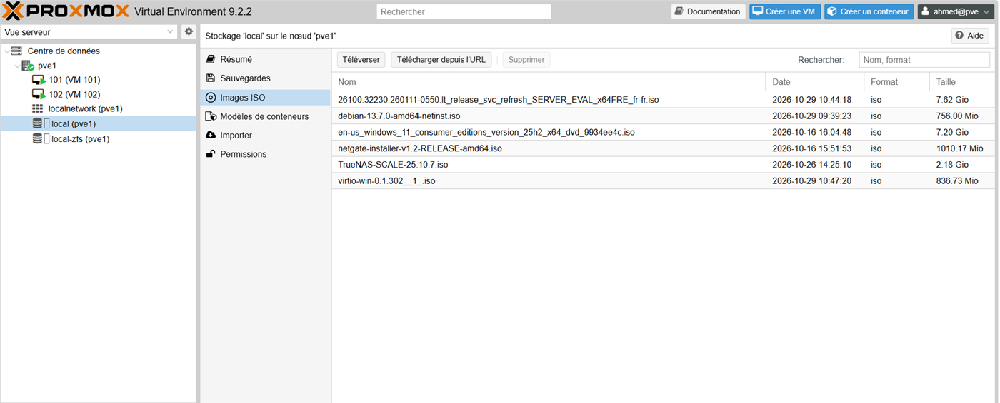
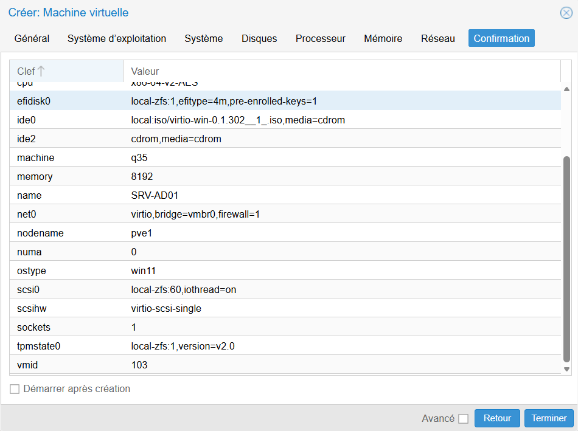
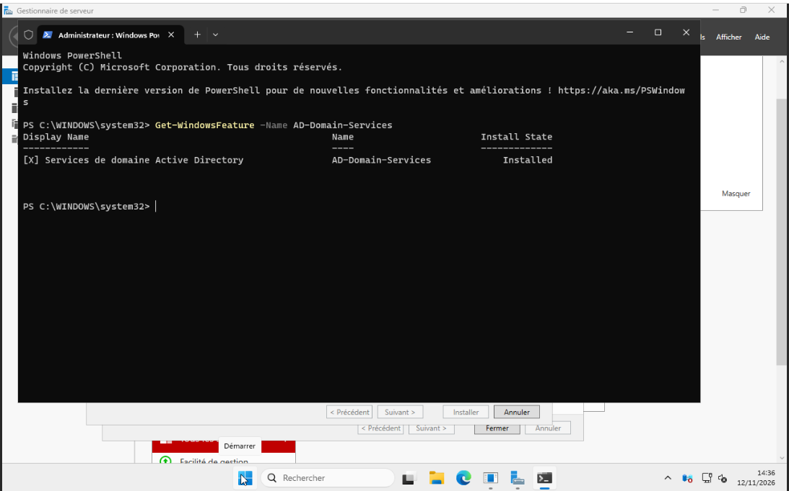
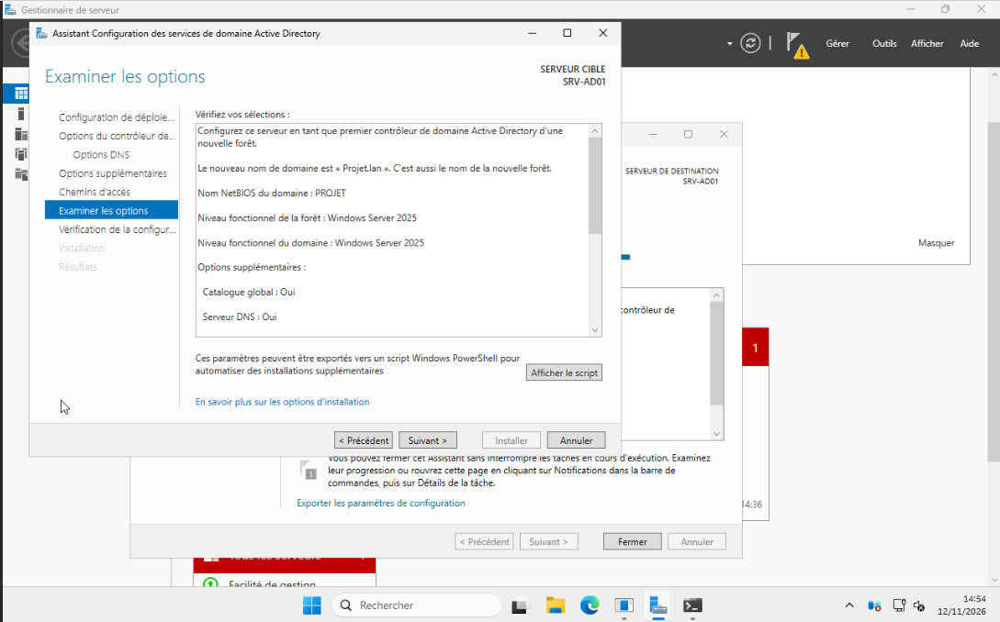
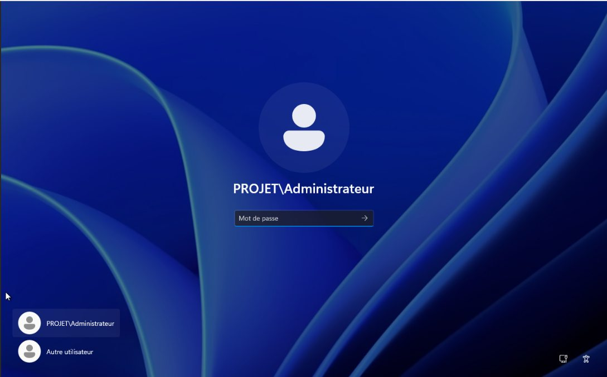

01Contexte et objectifs
Le projet consiste à monter, sur un cluster Proxmox, l'ensemble des services d'une petite infrastructure d'entreprise : annuaire, DNS, DHCP, routeur pare-feu, supervision, partage de fichiers, serveur web, Wi-Fi et ticketing.
Cette fiche couvre la première brique : un contrôleur de domaine Windows Server 2025, base de la gestion des utilisateurs, des groupes et des postes.
02Environnement technique
| Hyperviseur | Proxmox VE 9.2, nœud pve1, stockage local-zfs |
| VM 103 | SRV-AD01 : 2 cœurs, 8 Go de RAM, disque de 60 Go, UEFI + TPM 2.0 |
| Système | Windows Server 2025 (évaluation 180 jours), Expérience de bureau |
| Pilotes | ISO VirtIO (contrôleur SCSI, carte réseau, agent invité) |
| Domaine | Projet.lan, nom NetBIOS PROJET |

03Étapes de réalisation
- Création de la VM
VM 103 en machine
q35, firmware UEFI avec TPM 2.0 (exigé par Windows Server 2025), contrôleurvirtio-scsi-singleet carte réseau VirtIO sur le pontvmbr0.
FIG. 2Récapitulatif de la VM 103 avant création. - Installation de Windows Server et des pilotes VirtIO
Installation en mode « Expérience de bureau », chargement du pilote VirtIO SCSI pendant l'installation, puis
virtio-win-guest-toolspour la carte réseau et l'agent Proxmox. - Préparation du serveur
Fuseau horaire Paris (l'heure doit être juste pour Kerberos), nom
SRV-AD01, mises à jour, Bureau à distance. Avant de fixer l'adresse IP, j'ai vérifié le réseau : passerelle identifiée comme un équipement Cisco (adresse MAC), et aucun serveur DHCP existant détecté avec nmap. Le futur DHCP du serveur n'entrera donc pas en conflit.Une fois l'IP fixe testée (ipconfig, ping), j'ai pris un snapshot Proxmox pour pouvoir revenir en arrière.
- Rôle AD DS et promotion en contrôleur de domaine
Nouvelle forêt
Projet.lan, niveau fonctionnel Windows Server 2025, DNS installé en même temps et mot de passe de restauration (DSRM) défini.PowerShell · SRV-AD01# 1. Installation du rôle AD DS et des outils d'administration Install-WindowsFeature AD-Domain-Services -IncludeManagementTools # 2. Promotion : nouvelle forêt avec DNS intégré Install-ADDSForest -DomainName "Projet.lan" -InstallDns # 3. Vérifications après redémarrage Get-ADDomain Get-ADDomainController dcdiag Resolve-DnsName Projet.lan
FIG. 3Rôle AD DS installé. 
FIG. 4Récapitulatif : nouvelle forêt, DNS, catalogue global. - DNS
La zone
Projet.lanest créée automatiquement. Le serveur utilise désormais son propre DNS (127.0.0.1) :Resolve-DnsName Projet.lanrenvoie bien l'adresse du contrôleur.
FIG. 5Connexion avec un compte du domaine : PROJET\Administrateur.
04Difficultés et solutions
La VM ne démarrait pas sur l'installateur.
L'ISO n'était pas montée sur le lecteur CD : ajout de l'ISO et correction de l'ordre de démarrage.
Aucun disque n'apparaissait dans l'installateur Windows.
Windows n'embarque pas le pilote VirtIO SCSI : chargement du pilote depuis l'ISO virtio-win, puis le disque est apparu.
Leçon retenue : le nom du serveur, son IP et le nom de domaine se choisissent avant la promotion. Ils sont difficiles à changer une fois l'AD en place.
05Résultat et suite
SRV-AD01 est opérationnel : IP fixe, domaine Projet.lan, DNS intégré, et les contrôles (dcdiag, Get-ADDomain) sont valides.
Prochaines étapes : zone de recherche inversée et redirecteurs DNS, DHCP, unités d'organisation et utilisateurs, partages, GPO. Ensuite, le routeur pfSense et les autres services du projet.
06Compétences du référentiel mobilisées
- B1.1Gérer le patrimoine informatiqueRecenser les ressources · Vérifier les conditions de la continuité d'un service (snapshots avant chaque étape)
- B1.4Travailler en mode projetProjet en équipe découpé en briques successives
- B1.5Mettre à disposition un service informatiqueDéployer un service (AD DS, DNS) · Réaliser les tests d'intégration